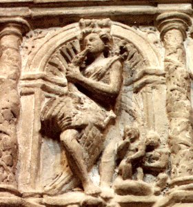
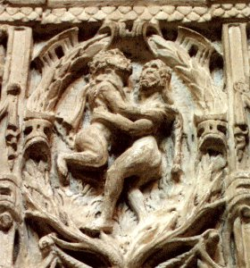
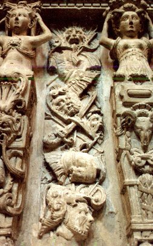
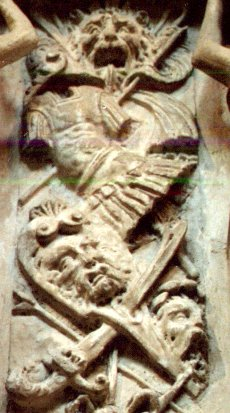
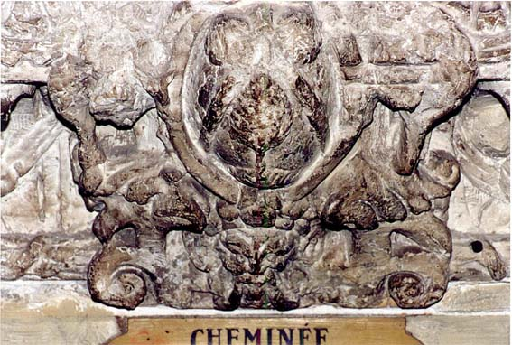
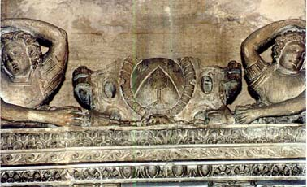

Emblema XXV.
revu le 7 mai 2002Préambule : dans ce chapitre, nous parlons aussi d'une cheminée alchimique, située à Avignon, dont le cachet hermétique a été humé par notre ami, M. Alain Mauranne. Nous avons introduit cette cheminée ici, car, comme on le verra bientôt, il s'agit d'un compendium sur la coagulation de l'eau mercurielle, c'est-à-dire sur la réincrudation des Soufres. Une courte introduction présente le cadre de cette cheminée, qu'on peut voir, entièrement, dans le site la Librairie du Merveilleux.
revu le 25 décembre 2001
Draconon moritur, nisi cum fratre & sorore sua interficiatur, qui sunt Sol & Luna.
(Le dragon ne meurt que s’il est tué par son frère et sa sœur,
qui sont le soleil et la lune1.)Abattre le dragon n’est pas une œuvre aisée,
Car bientôt il revit et rampe sur le sol.
Il n’est qu’un seul moyen : que son frère et sa sœur
Frappent sa tête de leurs massues2.
Le frère a nom Phœbus et la sœur est Cynthie3.
Il détruisit Python, Orion mourut par elle4.
Lors de la conquête de la Toison d’Or5, il fallait en premier lieu tuer le dragon ; mais beaucoup abordèrent cette épreuve sans succès : ils furent vaincus par le dragon et tués par son venin mortel6. La cause de cette défaite fut qu’ils n’étaient pas assez protégés contre ce poison, ni instruits du stratagème à employer pour venir à bout du dragon. Mais Jason (Médecin) ne négligea aucune sorte de remède ; il en reçut plusieurs de Médée (conseil de l’intelligence) et, entre autres, les images du Soleil et de la Lune ; il sut s’en servir avec bonheur et acquit ainsi la victoire avec la récompense, c’est-à-dire la TOISON D’OR7. Le dragon fut donc anéanti par le Soleil et la Lune ou leurs images, chose que les philosophes enseignent en divers endroits. Ainsi l’auteur du Rosaire rapporte les paroles d’autres écrivains ; Hermès :
« Le dragon ne meurt que s’il est tué par son frère et sa sœur ; non par l’un d’eux seulement, mais par tous les deux qui sont le Soleil et la Lune. »8
Aristote :
« Mercure ne meurt jamais s’il n’est tué à l’aide de sa sœur, c’est-à-dire qu’il faut le coaguler à l’aide de la Lune ou du Soleil. »
Note que le Dragon est l’argent-vif extrait des corps, ayant en lui corps, âme et esprit, dont il dit :
« Le Dragon ne meurt que s’il est tué à l’aide de son frère et de sa sœur »,
c’est-à-dire le soleil et la lune, ou encore le soufre que l’on a extrait et qui possède en lui la nature humide et froide de la Lune. Ainsi meurt le Dragon, c’est-à-dire l’argent-vif extrait des mêmes corps au commencement ; c’est l’eau permanente que l’on obtient après la putréfaction et la séparation des éléments ; cette eau est encore appelée d’un autre nom, eau fétide. Et tous les autres philosophes s’accordent avec celui-ci, si bien qu’il n’est pas besoin d’alléguer leur autorité en détail.9
Les Egyptiens vénéraient un dragon dans le temple d’Apollon, à cause du meurtre de Python. Le dragon témoigne une inimitié et une hostilité innées à l’éléphant10 dont il assaille les yeux et la gorge, jusqu’au moment où l’éléphant tombe et, du même coup, tue le dragon sous la masse de son corps. C’est de là que provient le sang de dragon amené dans nos contrées11. Le dragon possède des yeux qui ont la valeur de gemmes. Son regard est très perçant et très éclatant. C’est pourquoi il est souvent préposé à la garde des trésors12 ; il veille par exemple sur les fruits des Hespérides et, comme on l’a dit, sur la Toison d’Or, en Colchide. Les Anciens l’ont également assigné comme hiéroglyphe à Esculape13.
Mais les Chymistes introduisent le dragon dans leurs opérations d’une manière allégorique et non matérielle. Le dragon en effet représente toujours Mercure, qu’il soit fixe ou volatil14. C’est pourquoi l’on voit toujours Mercure avec deux dragons entrelacés dans le caducée (car le dragon est un serpent énorme). Saturne en porte un autre qui dévore sa queue, de même que Janus15. Le serpent est dédié à Esculape, fils d’Apollon, inventeur de la médecine (de la médecine philosophique). On prétend qu’il fut transporté d’Epidaure à Rome et qu’il y fut toujours honoré pour la délivrance d’une épidémie de peste qu’il avait, croyait-on, causée. Le dragon philosophique est toujours très vigilant et vif, il est difficilement vulnérable à cause de l’épaisseur de sa peau aussi bien que du venin dont il est armé. Car, à l'encontre des dragons vulgaires qui, dit-on, n’ont pas de venin, celui-ci n’en est pas dépourvu, et, si l’on ne procède pas avec précaution, il le lance sur quiconque l’approche16. C’est pourquoi on peut rarement le vaincre par la force, si l’on n’y ajoute la ruse de ses proches, car le poète dit avec raison :
« C’est une voie sûre et fréquentée que de feindre le nom d’ami. »
Si d’ailleurs, dans d’autres affaires, cette voie est sûre et fréquentée, elle n’est pas exempte de reproche17, mais non dans le cas présent. On dit que les charlatans et les médecins de carrefours chassent les vers des enfants après les avoir tués à l’aide de la poudre d’autres vers semblables, c’est-à-dire qu’ils tuent les frères à l’aide des frères, les sœurs à l’aide des sœurs. Ainsi le dragon doit être tué à l’aide de son frère et de sa sœur, le Soleil et la Lune. On voit par là que le dragon appartient également au nombre des planètes. Comme le Rosaire l’a déjà fait apparaître, c’est le Mercure extrait des corps18.
Certains Grecs rapportent que, sous le règne d’Hérode, un dragon aima une vierge nubile et belle et prit place dans son lit, tandis qu’un autre servit à divertir l’empereur Tibère qui avait pris l’habitude de le nourrir de sa main. Ainsi le dragon philosophique abandonne également sa sauvagerie et devient l’ami de l’homme s’il est convenablement traité, sinon il demeure hostile. L’historien Xanthus, cité par Pline, témoigne que le petit d’un dragon fut rappelé à la vie par sa mère grâce à une herbe nommée Balis19. Mais je vois là une allégorie philosophique plutôt qu’une histoire véritable, puisqu’aussi bien c’est seulement en Chymie que le dragon revit et que le dragon vivant meurt, à des reprises alternées. Mais, demandera-t-on, de quelle manière faudra-t-il capturer ce dragon ? Les philosophes répondent très brièvement en vers :
Montagnes donnent rebis et dragons ; La terre donne des fontaines.20
A propos de sa capture, on peut voir dans Tacite quel soin et quelle industrie des hommes en grand nombre durent déployer pour prendre un dragon que l’on avait découvert en Afrique et pour l’apporter à l’empereur Tibère. Le chemin que le dragon se frayait habituellement entre les pierres fut clôturé et rendu progressivement très étroit ; on l’y emprisonna à l’aide de filets et de liens et l’on finit par le maîtriser à coups de fouet et de bâton21. Il fut alors chargé sur un grand nombre de chariots et mis dans un navire qui le transporta à Rome.
Notes1. Ce chapitre s'intéresse à une époque déjà tardive de la Grande Coction. Epoque où l'on assiste à un équilibre instable entre le début de la réincrudation des Corps et celui de la fin de leur solution. C'est là que commence, par la voie sèche, le début de la volatilisation du dissolvant. Au plan zodiacal, l'emblème s'intègre au signe du Sagittaire [cf. Atalanta, XLIX].
2. Le point important est de savoir si les chaux métalliques jouent ici un rôle actif ou s'il ne s'agit que d'une pure allégorie où l'on assiste, à partir d'oxydes amorphes, à une cristallisation progressive. Pour la massue, nous rappelons que Vulcain fit présent d'une massue à Hercule [identique, par cabale, à l'arc d'argent offert par Apollon ; identique, encore, à l'épée que Vulcain donne à Pélée, père d'Achille, cf. Atalanta XXXVI et XXXVIII]. La massue n'est pas sans rapport avec les prisons métalliques. Voila ce qu'en dit E. Canseliet (Deux Logis Alchimiques, p.286) :« Exactement, la matière s'ouvre à l'issue d'un violent combat qui, du sentiment des auteurs, est la clef des « prisons métalliques ». Voilà pourquoi, sans doute, l'idée de clef, qu'éveille la racine grecque KLE reparaît phonétiquement dans les diverses traductions du mot massue. »
On pourrait ajouter que la massue est aussi le symbole de la FORCE et de la VERTU. Ailleurs, dans ses Deux Logis alchimiques, E. Canseliet analyse les caissons peints du château du Plessis-Bourré et notamment l'un d'eux donnant à l'un des chapitres le titre d'Homme-Lion :
« L'homme-Lion, de qui la longue queue finit en chevelure, elle aussi chassée par le vent, associe l'esprit et même l'âme du cosmos à l'alchimiste, que celui-ci soit par le Verbe ou par le Feu élémentaire. Ainsi le mercure et le soufre se sont-ils étrangement incarnés sur ce panneau, grâce à l'action de la massue, qui prépare celle de l'arc et de sa flèche - sagitta - dans les mains les plus habiles de l'homme-cheval ou sagittaire. »
Ainsi voyons nous s'établir une correspondance parfaite quant au sens à donner aux symboles hermétiques dans ce chapitre. Et notamment, que la massue n'est autre que l'effet du FEU qui ouvre la « prison métallique », c'est-à-dire le Ciel chymique qui contenait les Soufres : c'est l'époque de la réincarnation de l'Âme, qui s'opère grâce à l'arc et à la flèche du Sagittaire [voir Fontenay]. Ropalon [massue] est proche de roph, dont le sens est une action d'incliner, de haut en bas. La massue, par le FEU, assure ainsi la naissance de la pluie d'or et détermine la réincrudation. Une autre traduction de massue, korunh, apporte un complément d'exotérisme à ropalon. Outre le sens de massue, on lui trouve l'acception de bourgeon des plantes, et en assonance phonétique avec korunhoiV, germination de bourgeons. Tout cela a trait à l'apparition de l'or ENTÉ de Fulcanelli.
3. Pernety écrit à l'article Phoebus : Phœbus. Surnom d'Apollon. Voyez son article. PHŒNIX est aussi un des noms du palmier qui porte des dattes. Apollon représente le Soleil des alchimistes. Voyez en recherche. Sur Cynthie, voir Atalanta, X, note 3. Aussi bien apollon que Cynthie avaient leur temple au mont Cynthus [KunqoV], montagne de l'île de Délos [cf. Atalanta, XLVI].
4. Orion. Eut pour pères Jupiter, Neptune et Mercure. Ces trois Dieux voyageant sur la terre, logèrent chez Hyriéus, qui leur fit la meilleure chère qu'il put. Ils lui demandèrent ce qu'il voudrait pour récompense, et lui promirent de le lui accorder. Il leur répondit qu'il ne souhaitait rien tant au monde que d'avoir un fils. Peu de temps après ils lui procurèrent un fils de la manière dont le racontent les Fables. Ce fils, nommé Orion, s'adonna beaucoup à la chasse, et mourut enfin d'une flèche que lui décocha Diane, suivant le témoignage d'Homère. Orion est le symbole de l'enfant philosophique, né de Jupiter, ou de la matière parvenue à la couleur grise; de Neptune, ou de la mer des Philosophes, et du Mercure des Sages. La chasse à laquelle il s'adonne, est la volatilisation de la matière ; et la mort que Diane lui donne, est la fixation d'Orion, ou de la matière volatilisée, et qui se fait quand la couleur blanche, appelée Diane, paraît. [Dictionnaire, Pernety]Le symbolisme est clair. Voyez l'Atalanta, XLIX où le sujet est traité directement. Jupiter est le maître de l'AIR ; Neptune l'est de l'EAU et Mercure est double à ce stade de l'oeuvre, fait d'AIR et d'EAU qui sont les attributs hermétiques du dissolvant secret. Ce que Pernety ne dit pas, c'est la liaison que contracte Orion avec la terre adamique, d'abord par Chio et ensuite par Eos. La légende rapporte que s'étant rendu à Chios, Orion tomba amoureux de Mérope, petite-fille de Dionysos. Le roi Oenopion, pour le punir, le priva de la vue [cf. Atalanta, XXXVIII]. Il dut gagner l'Orient et s'exposer aux rayons du soleil. Il vécut ensuite comme chasseur en compagnie d'Artémis, mais Eos, qui l'aimait, l'enleva, et, par jalousie, Artémis le tua d'une flèche. Voila cette fable. Dans l'humide radical métallique, nous avons eu l'occasion de dire que si les alchimistes disent que les parents de la Pierre sont le soleil et la Lune, ils négligent de dire qu'Eos en est la marraine et Arès son parrain. Parce qu'Eos, l'Aurore [How], est fille de Titan et de la TERRE. Ce qui veut dire que, littéralement parlant et en se basant sur les règles les plus élémentaires de la cabale hermétique, l'Aurore, autre version de Vénus-Aphrodite, s'avère être un mélange de chaux -TitanoV- et d'argile [terre adamique] : il s'agit donc de la marne. Or, cette argile, Orion l'a déjà rencontré en se rendant à Chios [terre de Chio, terre adamique]. En bref, Orion semble être le symbole du passage de la matière de l'état volatil [comprenez dissous] à l'état fixe [réincrudation], passage qui se fait à l'époque propice, lorsque les fruits sont mûrs [Wriwn contracte, par cabale, un rapport avec orioV, mûr, saison opportune - voyez encore sur Orion l'Atalanta XLIX]. Nous ferons l'impasse sur Python, ayant tant de fois déjà rencontré ce symbole. Voyez l'humide radical métallique où nous tâchons d'extraire de ce serpent tout le principe utile [voyez encore les dix derniers chapitres de l'Atalanta, notamment l'emblème XLIV qui représente un compendium de l'olympe hermétique]. Il suffira ici de dire qu'il est probable que Typhon, anagramme de Python ait été frère d'Héphaistos, nés tous deux, sans doute, de Héra. Pour terminer, nous préviendrons une question que le lecteur pourrait nous poser : pourquoi est-ce Apollon qui tue Python et Artémis qui tue Orion ? La réponse s'impose d'elle-même : Apollon symbolise le Soufre rouge dissous dans le Mercure [symbolisé lui-même par le couple Héphaistos - Python] ; il est logique que le Soufre ne puisse être réincrudé qu'à la faveur de l'arc et des flèches. Pour Artémis, il s'agit du principe lunaire, qui correspond au SEL, c'est-à-dire au CORPS [à la matrice en somme] de la Pierre. Or, cette matrice a fort à voir avec la terre adamique et avec la marne [terre grasse, marga, cf. réincrudation]. Il s'agit, en effet, du Soufre blanc. D'un côté : fixation du SOUFRE ROUGE [principe de la teinture] ; de l'autre côté, fixation du SOUFRE BLANC [le porte-or, c'est-à-dire la TOISON d'OR ou christophore].
5. Sur le Mystère de la Toyson d'or, voyez notre analyse sommaire du voyage des Argonautes dans la section chimie-alchimie.Argonautes. Héros qui, selon la Fable, accompagnèrent Jason pour faire la conquête de la toison d’or. Quelque explication morale ou physique qu’on ait voulu donner à cette Fable, on n’a pu réussir à en faire d’application plus juste qu’en la regardant, avec les Alchymistes, comme une allégorie du grand oeuvre de la médecine universelle, ou pierre philosophale. Tous les Chefs de cette expédition ont vécu, selon la Fable, dans des temps si éloignés les uns des autres, qu’il n’est pas possible de donner la moindre vraisemblance à leur réunion. Aloysius. Martianus, outre plusieurs autres, a fait un volume entier sous le titre de Aureum vellus ou Toison d’or, pour expliquer chymiquement cette expédition. Il est peu d’Auteurs Alchymiques qui n’en aient parlé. Et à dire la vérité, l’étymologie du nom de Jason, qui veut dire art de guérir, suffirait seule pour rendre vraisemblable l’explication des Philosophes Hermétiques. Voyez les Fables Egyptiennes et Grecques, hv. 2, chap. 1. Argus Yeux d’). Les Chymistes Hermétiques ont dit que les yeux d'Argus furent transportés sur les plumes de la queue du Pan, pour signifier les différentes couleurs qui surviennent à la matière de la pierre pendant la coction. [Dictionnaire, Pernety]Voici ce que dit Charles-François Dupuy du voyage de Jason dans son Abrégé de l'Origine de tous les Cultes [Paris, Agasse, An IV, 1797] :La fable de Jason, vainqueur du bélier à toison d'or ou du signe céleste, qui, par son dégagement des rayons solaires du matin, annonçait l' arrivée de l'astre du jour au taureau équinoxial du printemps, est aussi fameuse dans la mythologie, que laArrêtons nous un instant pour faire rapidement le point sur les éléments de cette fable. Jason tire son étymologie du grec, et ne veut dire autre chose que l’Art de guérir. Jason ne fut jamais médecin ou chirurgien ; puisqu’il n’a jamais existé en réalité ; mais la Fable dit qu’il fut instruit par Chiron, le même qui instruisit aussi Hercule et Achille. On peut donc inférer que Jason est notre Artiste, à l'instar de Cadmus ou d'Hercule. Le navire Argo fut construit à partir des chênes de Dodone, qui donnaient des oracles par le bruissement de leurs feuilles dont les branches portaient des charges d'airain. Cette grosse et grande masse fut portée par cinquante hommes dans les déserts de la Lybie pendant douze jours ; Orphée son Pilote ne la gouvernait que par sa musique et son chant [le navire Argo eut un second pilote qui s'appelait Ancée, fils de Lycurgue, cf. Atalanta, XLVII] ; enfin ce navire périt de vieillesse, ensevelit Jason sous ses débris, et fut mis au rang des astres. Que veulent dire tous ces lieux où aborda le navire ? [voir ici les Fables Egyptiennes et Grecques pour un récit détaillé ; nous prenons ici des extraits du Dictionnaire afin de hâter le travail] Pourquoi d’abord à Lemnos [ce n'est pas un hasard si Lemnos fut remarquée par bien des héros, à commencer par Jason : il existe une proximité phonétique entre LhmnoV et le filet que l'on tend pour prendre des oiseaux, LhmniokoV. Il y a donc nécessité pour les artistes à chercher le filet sur lequel s'attarda Newton dans ses recherches alchimiques. Le problème est que Newton se trompait sur la nature du filet et qu'il ne le situait pas, surtout, à la bonne période de l'oeuvre. Car le symbolisme de ce filet n'est autre que l'effet de retenir ce qui est mobile, volatil. C'est pourquoi Lambsprinck, dans la première gravure de son De Lapide Philosophorum assure que l'Artiste qui saura prendre les poissons au filet - D'Espagnet assure de même, Oeuvre Secret d'Hermès - sera bien ingénieux], pour se rendre Vulcain favorable [Vulcain est ici le FEU élémentaire] ? Pourquoi Euripyle donna-t-il de la terre en présent à Jason ? C’est qu’Euripyle était fils de Neptune [Pindare assure qu'Eurypylos, fils de Poséidon, incarne Triton], que de l’eau on fait de la terre, et que de cette terre il faut faire de l’eau [allégorie du fixe et du volatil ; ce qui est volatil n'est pas forcément de l'AIR mais quelque chose de FLUENT ] ; c’est aussi de cette terre que Médée augura bien de l’expédition [on remarque là une confusion assez remarquable entre deux mythes : d'une part celui ou Cadmus tue le dragon et dont il sème les dents d'où naissent des soldats qui s'entre-tuent spontanément ; d'autre part de celui où Médée donne une pierre à Jason, pierre qu'il jette au milieu des hommes armés, nés des dents du dragon : aussitôt, les guerriers s'entretuent et le héros peut s'emparer de la Toison. Cette pierre rappelle aussi celle que Héra donne à Saturne au lieu de Jupiter. Nous y verrions volontiers une chaux]. Ce n’est pas aussi sans raison que Phinée fut délivré des Harpies par Calais et Zetès, tous deux fils d’Eole [les deux vents du Sud, déjà vues dans Atalanta, I -] ; puisque Basile Valentin dit dans sa sixième Clef, que deux vents doivent souffler, l’un le vent d’orient, qu’il appelle Vulturnus [Triomphe Hermétique de Limojon de St Didier], et l’autre le vent du midi, ou Notus [Ripley, Douze Portes]. Après que ces deux vents auront cessé, les Harpies seront mises en fuite, c’est-à-dire, les parties volatiles deviendront fixes [la matière est elle-même symbolisée par le devin Phinée, voir Mylius, Philosophia Reformata -]. Sur les jumeaux Castor et Pollux, nous jeterons une lumière supplémentaire par l'examen d'une cheminée alchimique, sise à Avignon. Nous empruntons les quelques lignes qui suivent en matière d'introduction à l'étude de cette cheminée.
fiction des douze travaux du soleil sous le nom d'Hercule, et que celle de ses voyages sous celui de Bacchus. C' est encore un poème allégorique qui appartient à un autre peuple, et qui a été composé par d'autres prêtres, dont le soleil était la grande divinité. Celui-ci nous semble être l'ouvrage des pélasges de Thessalie, comme le poème sur Bacchus était celui des peuples de Béotie. [...] Donc c'est encore dans le ciel que nous devons suivre les acteurs de ce nouveau poème, puisqu'un des héros les plus distingués d'entre eux est au ciel, et que là est la scène de toutes ses aventures ; que son
image y est placée, ainsi que celle de Jason, chef de cette expédition toute astronomique. On retrouve également au nombre des constellations le navire
que montaient les Argonautes, et qui est encore appelé navire Argo : on y voit aussi le
fameux bélier à toison d' or, qui est le premier des signes ; le dragon et le taureau, qui gardaient sa toison ; les jumeaux Castor et Pollux, qui étaient les principaux héros de cette expédition, ainsi que le Céphée et le centaure Chiron. Les images du ciel et les personnages du poème ont tant de correspondance entr'eux, que le célebre Newton a
cru pouvoir en tirer un argument, pour prouver que la sphère avait été composée depuis l' expédition des Argonautes, parce que la plupart des héros qui y sont chantés, se trouvent placés aux cieux. Nous ne nierons point cette correspondance parfaite, non
plus que celle qui se trouve entre le ciel et les tableaux du poème sur Hercule et sur Bacchus [...] La conclusion de Newton ne pourrait avoir de force qu' autant qu'il serait certain que l' expédition des Argonautes serait un fait historique, et non pas une fiction de la nature de celles faites sur Hercules, sur Bacchus, sur Osiris et Isis et sur leurs voyages, et nous sommes bien loin d' avoir cette certitude. Tout concourt au contraire à la ranger dans la classe de ces fictions sacrées, puisqu'elle se trouve confondue avec elles dans le dépôt de l' antique mythologie des grecs, et qu'elle a des héros et des caractères communs avec ceux de ces poèmes que nous avons expliqués par
l' astronomie. Nous allons donc faire usage de la même clef pour analyser ce poème solaire.
La galerie Archéologique La chapelle du Collège des Jésuites avait été conçue, à l’origine, pour présenter les sculptures médiévales et gallo-romaines du musée Calvet. Depuis une dizaine d’années, ces espaces se sont ouverts aux autres collections antiques du musée : égyptiennes, grecques et étrusques. Ces aménagements préfigurent le visage des futures salles d’archéologie au musée Calvet.
Depuis 1933, la chapelle du Collège des Jésuites accueille les collections archéologiques du musée Calvet. D’abord exclusivement réservé aux sculptures gallo-romaines et médiévales, le bâtiment offre à présent une présentation rajeunie et diversifiée des collections égyptiennes, étrusques, grecques et romaines du musée Calvet.
Au centre de l’édifice, la nef accueille dans la partie droite une sélection d’œuvres égyptiennes (paroi de tombe, stèles funéraires, tables d’offrande, statues honorifiques et votives), ainsi que des objets en rapport avec le culte des morts (vases canopes, coffret à ouchebtis et ouchebtis, vases à parfum et à galène mobilier, amulettes, petits bronzes). La pièce la plus rare désigne une tête de vizir en basalte qui date du Moyen Empire. Cette œuvre, consacrée au plus haut fonctionnaire de l’administration pharaonique, faisait partie du cabinet de curiosités d’Esprit Calvet (1728-1810).
Les tables disposées dans la partie gauche de la nef regroupent des vases grecs illustrant la diversité des productions (attiques, corinthiennes et italiotes) et des techniques (vases à figurines noires et rouges). Les formes complexes mêlent des vases pour le service du vin (cratères, coupes, skyphoi), le transport des liquides (amphores, hydries pélikai) et la toilette (lécythes à parfum, pyxides). Certains vases de grandes dimensions comme le barrel-amphora apulienne du « Peintre de Baltimore » étaient en revanche spécifiquement fabriqués pour la tombe, et leur fonction demeure exclusivement funéraire. Des terres cuites grecques complètent cet aperçu de la civilisation héllénique à l’époque classique.
Plusieurs tables rassemblent un échantillonnage représentatif des collections gallo-romaines : statuettes et vaisselle de bronze, lampes de terre cuite, verreries, objets d’os, d’ivoire et de pâte de verre, bijoux d’or. Beaucoup de ces pièces sont le fruit de fouilles réalisées dans le Vaucluse (Vaison, Apt, Orange) au XIXe siècle, sous l’égide de la Fondation Calvet. Le matériel retrouvé à l’occasion de ces campagnes provenait pour la plupart de tombes comme les pyxides gigognes d’os et les bagues en or. Parmi les bonnets de bronze, certains renvoient à la vie quotidienne comme la lampe à trois becs du « Trésor d’Apt » la serrure d’un coffret de Vaison la Romaine, mais aussi au panthéon gallo-romain. La tratuelle du grand dieu gaulois Dispater, coiffé d’une peau de loup, celle d’Esculape, dieu de la médecine, portent témoignage de la virtuosité des bronziers à l’époque impériale.
Les cinq chapelles de droite sont réservées aux sculptures de la Gaule romaine : inscriptions funéraires, honorifiques et votives, statues en ronde-bosse, portraits publics et privés. Dans la première chapelle de droite, figure la célèbre Tarasque de Noves, monstre androphage dont la fonction demeure énigmatique et qui ne connaît pas d’équivalents dans le monde gallo-romain. Devant les piliers, de part et d’autre de la nef, sont présentées des œuvres en ronde-bosse. A gauche, se détachent deux statues de guerriers gaulois. Celle de Mondragon montre le combattant vêtu à l’indigène (sagum, bouclier gaulois) ; celle de Vachères donne à voir un guerrier doté d’un armement et d’un costume romains, mais paré du torque (bijou celtique).
Devant la troisième chapelle de gauche est présentée une des œuvres les plus significatives du musée : la scène de halage de Cabrières-d’Aigues, fragment d’un monument funéraire élevé à la mémoire d’un riche marchand de vin ou d’huile, qui offre un bon exemple du transport des marchandises dans l’Antiquité paléo-chrétiennes : inscriptions funéraires, fragment de sarcophages, table d’autel, vasque à ablutions. La sacristie de gauche est dévolue aux sculptures grecques. Stèles funéraires, reliefs votifs et honorifiques constituent un ensemble unique d’originaux grecs allant du IVe s. av. J.-C.au IIIe s. ap. J.-C. Cette série comporte quelques œuvres de grande qualité comme la stèle attique de la jeune fille à la poupée. Une autre belle stèle attique classique, acquise en 1999 par la fondation Calvet, est une stèle de chasseur. Ce dernier, entouré de ses chiens de race laconienne, brandit triomphalement au bout du Lagobôlon (un bâton recourbé) sa proie : un lièvre.
Le chœur sert d’écrin à un ensemble d’urnes étrusques d’époque hellénistique en tuf, albâtre et terre cuite, qui recensent la plupart des thèmes illustrés sur ce type de matériel funéraire : épisodes mythologiques, historiques et scènes familiales. Ces urnes prenaient place dans des tombes à chambre et proviennent principalement de deux grandes cités étrusques, Volterra et Tarquinia. Une des pièces les plus remarquables de cette série fait référence à une urne d’albâtre de Volterra dont la cuve représente deux dauphins affrontés de part et d’autre d’une plante aquatique. Ces gracieux cétacés ornent souvent les parois des nécropoles étrusques et une valeur sotériologique (qui rapport au salut par un rédempteur) peut leur être accordée.
Les quatre premières chapelles de gauche gardent la mémoire de la présentation muséographique primitive. Ici figurent une magnifique cheminée de la Renaissance décorée d’une scène mythologique (Léda et le Cygne), des sculptures de la Renaissance (tombeaux gothiques provenant du couvent des Dominicains) et de l’époque moderne (tombeau réalisé par Gaspart de Simiane, vierge à l’enfant de Péru).extrait de : http://www.mairie-avignon.fr/pratique/detail.php3?service_id=0088

FIGURE II
(cheminée hermétique d'Avignon, panneau de gauche, détail -
photo Philippe Litzler ; cliquez pour agrandir : cliché d'Alain Mauranne)Ces motifs somptueux ont déjà eu la faveur d'une analyse approfondie de la part d'un trio d'artistes, analyse regroupée sur le siteLibrairie du Merveilleux, animé par un mystérieux Alkest. Mais les noms de certains des commentateurs nous sont bien connus : Philippe Litzler a établi l'introduction ; Leo Ireneus et Alkest, les commentaires et M. Martial Suven a proposé la conclusion. Cette cheminée a été « inventée » par M. Alain Mauranne, à qui nous devons l'ensemble de la section sur Fontenay. Qu'il soit bien chaudement remercié pour les magnifiques photographies que nous lui devons, ainsi que Philippe Litzler dont on voit certains détails aux figures II et III. Le lecteur doit voir en notre ami un nouveau Julien Champagne. Mais venons-en à ce caisson de cheminée. Il donne à voir, bien sûr, la fameuse fable où Léda se joint au cygne, apparence sous laquelle se manifeste Zeus. Le résultat de la progéniture est connu : Castor et Pollux, les jumeaux. Ce sont eux que l'on voit en bas à droite. Et c'est là où nous intervenons. Car ces jumeaux fabuleux ont une part importante dans l'histoire des Argonautes. Mais il faut voir ce que représente l'union entre Zeus et Léda. Zeus, c'est le CIEL. Il est lié à un instrument de l'Art qui est de vertu céleste : la rosée de mai, qui voile l'identité du dissolvant des Sages. Léda est la femme de Tyndare. Zeus et Léda ont pour enfants Pollux et Hélène. Hélène est parée de tous les dons que confère la beauté et elle est l'objet de la convoitise de tous les Héros. C'est elle qui est la cause de la guerre de Troie. Elle représente, au vrai, l'escarboucle des Sages : la Pierre au rouge. Quant à Castor, c'est le frère de Clytemnestre [1, 2, 3, 4,] et tous deux sont enfants de Tyndare. On voit ainsi que l'artiste qui a gravé ce caisson ne s'est servi que d'un symbolisme simplifié, puisqu'il aurait dû représenter non point Castor et Pollux, mais bien Pollux et Hélène. Rien ne dit d'ailleurs que tel ne soit pas le cas et la première hypothèse est défendue dans l'introduction de M. Litzler. Nous défendrons donc la deuxième hypothèse. Elle s'appuie d'abord sur le fait que Pollux était immortel ; en cela, il se rapproche du SEL incombustible qui résiste à tout, même au feu de nature des alchimistes, à leur serpent Ouroboros. Du coup, qu'il soit frère de la PIERRE, réputée aux pouvoirs si étendus, n'est plus étonnant. Pollux parvient à un exploit sans précédent : il arrive à battre aux poings Amycos - l'un des épisodes du voyage des Argonautes - et à lui arracher la promesse de laisser désormais les étrangers en paix. Le lecteur, au fait des secrets hermétiques, sait qu'Artémis était la déesse à qui des étrangers étaient sacrifiés [voyez la section blasons alchimiques où nous disons ce qu'il faut penser de ces étrangers]. Et qu'Artémis représente le principe lunaire de la Pierre, c'est-à-dire le SEL incombustible qu'on a faussement identifié au Mercure, alors qu'il s'agit de la TERRE, ou, plus exactement, du CORPS. Nous voyons ainsi la filiation assez nette qui semble exister entre le couple Zeus-Léda et le SEL. Quant au couple Castor-Pollux, ils figurent une version renouvelée du signe des Gémeaux, dont on a vu qu'il représentait l'hiéroglyphe spirituel du Mercure philosophique, ainsi qu'on peut le voir nettement sur l'une des gravures du Livre d'Abraham Juif. Il s'agit donc des deux Soufres de la Pierre. L'un est le Soufre blanc ou SEL [le principe SEL de Paracelse ou l'Arsenic de Geber] et l'autre est le Soufre rouge ou ÂME. A une époque de l'oeuvre, qui fait l'objet du présent chapitre de Maier, le début de la réincrudation intervient. C'est la « recorporification » des Soufres, c'est-à-dire la résurrection du Soufre rouge, auparavant dissous dans le Mercure. Cette chaux fusible et combustible est symbolisée par le frère jumeau de Pollux, Castor. Parce que Castor est fils d'un mortel, Tyndare, alors que Pollux est né de Zeus. On voit ainsi le parallèle qu'il y a entre Hector et Castor d'un côté, et entre Achille et Pollux de l'autre. Mais il y a plus. La légende raconte que les Dioscures [Castor et Pollux] enlevèrent Phoibè et Hilaera, les deux filles du roi Leucippos, qui étaient fiancées à Idas et Lyncée, leurs cousins. Les fiancés irrités, poursuivirent les deux ravisseurs. Castor fut tué au cours du combat qui s'ensuivit. Mais Pollux, immortel, fut seulement blessé et enlevé par son père, Zeus, dans les cieux. Pollux ne put se consoler de la mort de son frère. Zeus lui accorda alors la faveur de partager son immortalité avec Castor un jour sur deux. Ainsi, la mort même ne put séparer les deux amis, qui brillent désormais, au ciel firmamental, dans la constellation qui porte leur nom. Voila une bien belle histoire, mais que nous raconte-t-elle de positif ? Que Phoibè fut épousée par Pollux, l'immortel. Or, Phoibè est cette Titanide qui, unie à Coeos, devint mère de Léto et d'Asteria, c'est-à-dire grand-mère d'Apollon, le symbole suprème du Soleil, soufre rouge incarné. Et que Hilaera était prêtresse d'Artémis, enlevée et épousée par le mortel Castor. Aussi bien Phoibè que Hilaera étaient nommées les Leucippides. Il n'aura pas échappé au lecteur, même novice en Art d'Hermès, que ces LeukippideV ont une couleur blanche. Là encore, cela est conforme à l'esprit qui règne dans ce chapitre où la noirceur est déjà loin derrière nous. Ainsi, tant Castor que Pollux contractent des liens avec Apollon et Artémis, ce qui accuse la nature de ces Dioscures, les Dioskoroi, littéralement « jeunes garçons de Zeus ». Ces Jumeaux, ou plutôt ces Gémeaux, sont des dieux protecteurs des marins, auxquels ils apparaissent dans les tempêtes sous la forme des feux de Saint-Elme [Sancta Helena], lueurs phosphorescentes qui, par temps d'orage, voltigent sur la mer. Par extension, on les a fait des dieux protecteurs des voyageurs sur terre et sur mer, et par suite, des dieux de l'hospitalité ; ils ont surtout été honorés comme dieux équestres présidant aux courses de chars. Or, ces feux de Saint-Elme accusent encore plus, s'il était besoin, la nature sulfureuse de ces dieux et le nom même donné au feu qui les corporifie sous forme aérienne, « Saint-Hélène », affirment le but qu'ils poursuivent en procurant secours et abris aux malheureux pélerins de Compostelle, aux nautoniers de tous bords, à nos Artistes...Quant à la scène mythique figurée ci-dessus, elle ne serait, pour Pernety, que :
le prétexte des auteurs chymiques à nous parler du vase précieux, de l’esprit fixe implanté dans lui, l'un des plus grands secrets de la cabale des Egyptiens. Il a donc fallu chercher un vase analogue à celui que la Nature emploie pour la formation des métaux ; un vase qui devînt la matrice de l’arbre doré des Philosophes ; et l’on n’en a point trouvé de meilleur que le verre. Ils y ont ajouté la manière de le sceller, à l’imitation de la Nature, afin qu’il ne s’en exhalât aucun des principes. Car, comme dit Raymond Lulle, la composition qui se fait de la substance des vapeurs exhalées, et rabattues sur la matière qui se corrompt, pour l’humecter, la dissoudre, est la putréfaction. Ce vase doit donc avoir une forme propre à faciliter la circulation des esprits, et doit être d’une épaisseur et d’une consistance capable de résister à leur impétuosité. [Fables]Voyons à présent le caisson de droite de la cheminée alchimique d'Avignon.

FIGURE III
(cheminée hermétique d'Avignon, panneau de droite, détail -
photo Philippe Litzler - cliquez pour agrandir : cliché d'Alain Mauranne)Dans ce second caisson, nous voyons un combat opposé à un homme robuste, celui de droite, qui doit être couvert d'une peau de lion ou de léopard. Le personnage de gauche semble moins robuste et en tout cas, de plus petite taille que celui de droite. Par ailleurs, on devine mal les traits de sa figure qui ne semble pas tout à fait humaine. Là encore, il s'agit d'une scène mythologique. Quels sont les grands héros qui portèrent des peaux de félins ? Deux noms viennent à l'esprit : Cadmus et Hercule. Cadmus n'ayant combattu que le serpent Python, il ne reste plus qu'Hercule. On sait - cf. Fontenay - qu'il gagna cette peau de lion dans son Ier combat qui l'opposa au Lion de Némée. On sait aussi que cette peau qui, dans ses Travaux, le protégea maintes fois, fut aussi cause de sa perte. Nous n'avons plus qu'à déterminer de quel combat il est question dans ce caisson de la figure III. Il ne nous paraît pas totalement impossible d'y voir le combat d'Hercule contre Nessus. Voici ce qu'en dit Pernety :
Centaure, fils d'Ixion et d'une nuée, voulut faire violence à Déjanire, qu'Hercule lui avait confiée pour lui faire traverser le fleuve Evene. Hercule s'en apperçut, de l'autre bord lui décocha une flèche dont Nessus mourut. Se sentant blessé à mort, il donna à Déjanire sa tunique teinte de son sang, en lui faisant entendre que cette tunique aurait la vertu d'empêcher Hercule d'en aimer d'autres qu'elle, s'il la vêtissait seulement une fois, et qu'elle augmenterait même les feux dont il brûlait pour elle. Déjanire la prit, engagea Hercule à la vêtir, et ce Héros se sentit saisir d'un feu qui le dévorait. Voyez DEJANIRE , et les Fables Egyptiennes et Grecques dévoilées, liv. 5, ch. 19.Et il nous semble bien voir une sorte de vêtement drapper le personnage de gauche. Si tel était le cas, la signification hermétique est la suivante.HERCULE est aussi le nom que les Alchymistes donnent à leurs esprits métalliques, dissolvants, digérant, sublimant, putréfiants et coagulants. Ils regardent les travaux d’Hercule comme le symbole du grand oeuvre, ou des opérations de la pierre philosophale. On peut voir à ce sujet le Traité de Pierre Jean Fabre, Médecin de Montpellier, qui a pour titre : Hercules Piochymicus, imprimé à Toulouse en 1634. Il y explique les travaux d’Hercule, par le rapport qu’ils ont avec les opérations de l’Alchymie, avec tant de vraisemblance, qu’on peut assurer avec lui, que presque toute la Fable n’est qu’un tissu de symboles énigmatiques du grand oeuvre ; ceux qui sont au fait en feront aisément l’application. Anthée, par exemple, ce Géant si redoutable, fils de la Terre, qu’Hercule ne put vaincre tant qu’il toucha la Terre sa mère; mais qui fut suffoqué dès qu’il fut élevé en l’air, représente la terre métallique grossière, et qui ne peut devenir propre à la teinture des métaux, qu’après avoir été sublimée par le mercure ou les esprits métalliques sublimant représentés par Hercule. Cette terre, après avoir été sublimée, doit mourir ou être étouffée dans les airs, c’est-à-dire, doit changer de figure, de forme et de nature, doit être changée en vapeur aqueuse ; et puis retomber pour être putréfiée, et ensuite ressusciter de ses cendres comme le phœnix. Tous les livres des Philosophes le disent, entre autres Clangor Buccinae, p. 482. Celui qui saura convertir notre terre en eau, cette eau en air, cet air en feu, ce feu en terre, possédera le magistère d’HERMÈS, qui n’est autre que la pierre Philosophale. Mais le plus communément Hercule est le symbole de l’artiste qui emploie le mercure philosophique pour faire tout ce qu’on lui attribue. Voyez les Fables Egypt. et Grecques dévoilées, liv. 5°, où l’on explique tous les travaux d’Hercule.Déjanire parle d'un philtre (sang de Nessus), destiné à enflammer la tunique d'Hercule, philtre qui ne doit pas être exposé aux rayons du Soleil. On serait porté à regarder ces indications comme purement fabuleuses, si on ne les retrouvait dans des recettes d'apparence purement scientifique, telles que celles de Julius Africanus [1, 2,] et de Marcus Graecus [1, 2, 3, 4, 5, 6, 7,] ; la pyrite (fer sulfuré) et la chaux vive y figurent [adapté de M. Berthelot, La légende des savants alexandrins, in Notices relatives à l'histoire des Sciences, T. XLIX]. D'après Salverte, dont nous avons donné la critique son Histoire de la Magie par Chevreul :[...] Il en est de même de l'explication de la mort d'Hercule causée par la tunique imprégnée du sang de Nessus, que Déjanire avait envoyée au héros. Salverte en appelle aux chimistes, et nous craignons bien que ceux qui le liront ne partagent point ses convictions. Quoi qu'il en soit, le sang de Nessus était formé, suivant Salverte, de parties égales de soufre et de phosphore : c'était un sulfure de phosphore liquide à 10 degrés et inflammable à 5 degrés ; il explique toutes les circonstances de la mort d'Hercule comme s'il eût assisté au sacrifice, tant sa foi est robuste en ses conceptions.Sans y voir un sulfure de phosphore, nous y verrions plus volontiers une sorte de pyrophore dont nous avons déjà parlé [Fontenay, Atalanta, III, VII, XIII, etc.] et qui est une sorte de Mercure incontrôlable, parce que trop sensible aux Eléments de Platon, l'AIR mêlé d'EAU notamment, produisant un FEU issu de cette TERRE NOIRE. Mais dès lors que nous avons établi le rapport entre le caisson de droite et le combat d'Hercule contre Nessus, comment le relier à la scène de gauche, celle relative aux Soufres ? La réponse réside dans le personnage de gauche, supposé être un Centaure. Nous avons dit, dans la section Fontenay, ce qu'il fallait penser du Centaure, pris comme Sagittaire, homme-cheval ; après tout, n'avons-nous pas vu ici même, l'homme-lion et sa massue ? Eh bien ! nous affirmons que les deux ne sont qu'un : la massue et à l'identique de l'arc et des flèches et le résultat à obtenir est le même : obtenir l'ouverture de la prison des Soufres et précipiter la réincrudation. Voyons à présent le caisson central de la cheminée.

FIGURE IV
(cheminée alchimique d'Avignon, caisson central -
photo Philippe Litzler - pour une vue frontale, cliquez ; cliché Alain Mauranne)Nous passerons sur les Cariatides, non pas que ces symboles soient à dédaigner. Non. Mais d'autres que nous, que nous avons nommés, ont eu ce soin et ont rappelé, justement, celles de la cheminée alchimique du château de Terre-Neuve, à Fontenay, dont n'avait point manqué de parler Fulcanelli. Ce sont quelques détails qui attireront notre regard. On ne peut manquer de voir à droite, une tête de bélier, et à gauche, une tête qui affecte assez bien celle des traits de taureau. Ces hiéroglyphes célestes sont trop connus pour que nous dissertions d'eux, à nouveau, de façon approfondie. Nous ferons remarquer toutefois le caractère double que leur prête la tradition, et qui est souvent oublié des étudiants. Le Bélier et le Taureau, nul ne l'ignore, sont ceux pendant lesquels les grands auteurs conseillent de faire débuter le travail. Nous avons fait voir ailleurs que la date donnée, qui correspond à l'équinoxe de Printemps, c'est-à-dire au point g de l'écliptique, était toute faite de cabale et que c'est non pas une date qu'il fallait y voir, mais une matière ou une époque canonique de l'oeuvre. Les matières, quelles sont-elles ? Cela dépend de la distance à laquelle on se place, raison pour laquelle Michel Maier conseille, dans la gravure XLII, à l'artiste de chausser une bonne paire de lunettes. Si l'on se place près des deux Cariatides, nous verrons tout bonnement Mars et Vénus. Nous savons quoi faire de ces deux hiéroglyphes : un sel de vertu céleste, qui tient d'Aphrodite par sa base et d'Arès par son acidum pingue. Mais, si nous regardons d'encore plus près les Cariatides, nous verrons apparaître les images de nos luminaires : Soleil et Lune, ou si l'on préfère Apollon et Artémis. La raison tient à ce qu'enseigne là-dessus la tradition astrologique. Elle nous dit, en effet, que le Soleil est exalté dans le signe du Bélier et que la Lune l'est, dans le signe du Taureau. Ainsi, ce panneau central est-il centré aussi bien sur les travaux de la préparation des Soufres [caisson de gauche], que sur leur réincrudation [caisson de droite]. La liaison est médiée par le caisson central qui va maintenant faire l'objet de nos supputations. Ce caisson présente un aspect absolument fascinant, nulle part vu ailleurs. On peut y voir plusieurs parties. En haut, semble se détacher une face féline, dans laquelle on devine un lion. Puis, plus bas, des motifs contournés où il nous semble voir des ailes de harpies. Voyons un agrandissement de cette partie centrale.

FIGURE V
(partie supérieure du panneau central - Philippe Litzler
vue frontale, cliquez : cliché Alain Mauranne)Contrairement aux apparences, ce ne sont pas les hiéroglyphes du Mercure philosophique qui ont été ici gravés, mais ceux de la préparation du Soufre rouge. On distingue nettement la tête du Lion vert, qui constitue l'emblème du Mercure commun. Ce Lion est le premier dissolvant des Sages, celui qu'ils emploient pour ramener les métaux à un état primitif d'humide radical métallique. Au-dessous, on voit très nettement ce qui est une tunique romaine. Cette tunique va dans le droit fil de nos réflexions, quant au panneau de droite, qui montre probablement l'affrontement du centaure Nessus et d'Hercule. Cette tunique est une indication sur le vitriol romain. Par vitriol romain, suivant Chambon dans son Traité des Métaux
« on entend un vitriol pierreux qui se rencontre quelquefois dans les mines, lequel, frappé d'un acier, rend du feu comme la pierre à fusil. Il y en a considérablement dans les mines d'or de Hongrie, et quand il se rencontre de ce vitriol dans les mines, cela est d'un bon présage. On appelle ce vitriol Romain, non pas qu'il en vienne plus de Rome ou de son territoire que d'ailleurs, mais c'est par son excellence entre les autres vitriols qu'il porte ce nom. Les philosophes l'ont appelé aussi Usnea. »
Rupescissa soutient que le vitriol Romain est la vraie matière des Philosophes ; et ceux qui reconnaissent Rupescissa pour Adepte, vous recommandent de ne point prendre le vitriol Romain ni tout autre [Pernety, Dictionnaire]. Et voila comment les Adeptes induisent les étudiants en confusion. On pourrait croire, en première analyse, comme nous avons été tenté de le faire auparavant, que le vitriol romain est une indication sur l'alun de Rome, dont il existait une belle mine à Tolfa. Mais ce serait une erreur.
à Mais qu'est-ce exactement que ce vitriol pierreux ? Dans son Cours de Chymie [Paris, 1675], Nicolas Lemery reconnait quatre vitriols, substances composées d'un sel acide et d'une terre sulfureuse. Il distingue le vitriol bleu, le vert, le blanc et le rouge. Le vitriol bleu, nous le savons maintenant, est du sulfate de cuivre ; on l'appelle aussi vitriol de Chypre, couperose bleue. En Europe, le vitriol bleu se trouvait proche des mines de cuivre dans la Hongrie. Lemery distingue ensuite trois sortes de vitriol vert, celui d'Angleterre, celui d'Allemagne et le vitriol Romain. Ce vitriol vert se nomme aussi vitriol martial ou couperose verte : c'est du sulfate de fer. Enfin, le vitriol blanc de Goslard est un sel neutre métallique dans lequel l'acide vitriolique a pour base du zinc uni à une petite quantité de fer et de cuivre. Il faut le différencier du vitriol calciné en blancheur qui n'est que du vitriol vert, qui reprend sa couleur aussitôt qu'on lui restitue son eau de cristallisation. Quant au vitriol rouge, il est appelé colcothar naturel ou Chalcitis [il ne s'agit pas d'un sulfate mais d'un oxyde ferreux]. On trouve ordinairement le vitriol proche des mines des métaux, quelquefois cristallisé naturellement ; mais le plus souvent, il est mêlé dans des terres et dans des marcassites d'où il faut le retirer par la lessive, comme on retire le salpêtre. On retire encore souvent du vitriol de certaines pierres nommées mâchefer ou pierres d'arquebusade qu'on trouve dans les lieux où les potiers vont chercher l'argile ; quelquefois même cette argile ou terre grasse contient un peu de vitriol. Ces sortes de terres contiennent presque toujours du vitriol martial et c'est ce qui les rend propres à la distillation des esprits acides de nitre et de sel marin.
à Et quelle est donc l'opération à pratiquer sur ce vitriol ? Il faut en faire un vitriol rouge, c'est-à-dire rubéfié. Voici ce qu'il convient, au vrai, de faire avec cette matière mystérieuse :« Prenez telle quantité de vitriol romain que vous voudrez, toujours après ramollissement et putréfaction dudit vitriol, mettez-le dans un urinal de terre qui résiste au feu avec sa chape et récipient bien luté. Vous lui donnerez feu lent de distillation, il en sortira quantité d'eau comprenant l'esprit et l'huile, et lorsque le vitriol dans l'urinal sera en forme de chaux arrêtez votre distillation, et remettez son eau dessus et distillez tant de fois en cohobant jusqu'à ce que le vitriol ne jette plus d'eau et soit devenu blanc, alors augmentez le feu d'un degré, il deviendra tout rouge : c'est là le vitriol rouge et rubifié. »
D'abord, voyons quelle est la minière de ce vitriol. Biringuccio [Pyrotechnie, Paris, Claude Fremy, 1572] nous dit que le vitriol est une substance minérale produite par exhalaison et de laquelle toutes les matières, en particulier les métaux, et même l'or, seraient engendrés. Le vitriol, nous assure-t-il, approche bien fort de l'alun par sa forme, et qu'il ne tarde pas à se résoudre en eau, étant disposé dans un lieu humide. On distingue cinq propriétés à cette « pierre et non pierre » : la première est qu'il a la propriété du soufre ; la seconde, de l'alun ; la troisième, la ponticité du nitre ; la quatrième, les vertus du métal et enfin, la propriété du fer. Sa minière se trouve dans des lieux sauvages, peu fréquentés ; on l'extrait et on le tire de vallées situées au pied des montagnes, où il tient sa résidence. Il paraît qu'on trouve sa mine plus communément en TERRE NOIRE ; qu'il faut faire attention que cette terre pierreuse soit semée par en dedans de taches jaunes et vertes. Les eaux qui viennent à sortir des lieux où il tient sa demeurance sont toutes corrompues, très épaisses et semblent tenir davantage de la TERRE que de l'EAU. On observe parfois d'importantes fumées qui font tenir sa mine comme une cave infernale. La mine de vitriol est trouvée en Italie et d'aucuns affirment que là où elle se tient, l'or n'est pas loin. Cette mine de vitriol est découverte à des signes assez nombreux, notamment à sa senteur forte [c'est ce qu'affirme Nicolas Flamel dans ses Figures Hiéroglyphiques]. Plusieurs alchimistes ont ostensiblement recommandé le vitriol Cyprien et le Babylonien. Certains, plus charitables que d'autres, l'ont même appelé le dragon babylonien [1, 2, 3, 4, 5, 6, 7,]. Le vitriol romain est tiré au conté de Baignorée. Et bien qu'il n'ait pas le lustre ni la couleur vert azuré comme le Cyprien, il semble que le plus estimé soit le NOIR. Il semble tenir surtout de sa terre et la plus grande partie approche la verdeur des herbes, l'autre approche la couleur jaune, quelque peu moucheté de vert ; celui de Toscane ne le cède en rien au Cyprien. Les alchimistes usent volontiers du Cyprien romain, quand ils veulent faire leurs huiles et eaux fortes et corrosives.
à On voit par cette description de nombreux points communs avec ce qui se lit dans les anciens traités d'alchimie, comme du reste avec ce qu'ont écrit E. Canseliet et Fulcanelli, touchant notamment au symbolisme des Vierges noires, aux cierges verts, etc. Mais c'est sans doute dans les traités suivants que l'on trouve les éléments les plus intéressants touchant à notre sel : le Composé des Composés [Albert Le Grand], la Clavicule [Raymond Lulle], la Nouvelle Lumière Chymique [Alexandre Sethon], la Lumière Sortant par soy-même des Ténèbres [apocryphe, peut-être attribuable à Crasseus ou Grasseus, nommé « Crasselame »...], L'Entrée Ouverte, etc. [Philalèthe], le Vitriol [Tripied], l'Atalanta fugiens [Michel Maier]. Il faut citer aussi la trilogie fulcanelienne et les ouvrages de Canseliet. A présent, essayons de nous représenter ce que les alchimistes faisaient de leur vitriol romain. Ce vitriol est semblable à celui d'Angleterre qui participe du fer et est propre à faire l'esprit de vitriol, excepté qu'il est moins facile à fondre. Il faut bien le différencier du vitriol rouge apporté d'Allemagne et connu sous le nom de Colcothar naturel ou Chalcitis. En effet, la nature semble avoir préparé exprès pour les besoins des alchimistes ce minéral : on tient que c'est un vitriol vert calciné par quelque feu souterrain. C'est, en tout cas, le plus rare des vitriols. Baron écrit en note dans le Cours de Chymie de Lemery : c'est une question qui n'est pas encore décidée de savoir s'il existe un vitriol rouge naturel, non pas que la chaleur des volcans ne fût plus que suffisante pour calciner du vitriol au point de lui faire prendre une couleur rouge ; mais par l'incertitude où l'on est qu'il y ait du vitriol de première création. Nous renvoyons ici à notre Mercure de Nature. Quoi qu'il en soit, examinons ce vitriol. D'abord, il faut d'abord le calciner [cf. tartre vitriolé]. On obtient d'abord du vitriol calciné en blancheur et si l'on poursuit la calcination à grand feu, on obtiendra une substance rouge comme du sang, qui est le colcothar. Voyez donc que, parti du vitriol vert, nous en sommes venu au colcothar. Il y a là une indication riche de cabale. La matière première, en effet, est un sulfate, c'est-à-dire un corps corrompu qui va passer au creuset et souffrir la passion. Observez ensuite l'ordre des couleurs : blanc d'abord, puis rouge exactement comme indiqué par les textes. De tous les sels de fer, le plus important est, sans contredit, celui qui porte depuis longtemps les noms de vitriol, de vitriol vert, de vitriol martial ou romain [indiqué de manière exotérique nette, sur la figure V.] On le désigne aussi sous le nom de couperose verte et il a été consacré dans les traités d'alchimie sous l'appellation de ioV. C'est lui qui forme la sphère de la violette d'E. Canseliet, lui qui est responsable de l'Aurore boréale [Orion et Borée, cf. supra, note 4] qui s'installe dans le petit monde de l'Adepte, au moment convenu. Les Anciens le connaissaient : dans Pline, on le voit désigné sous les noms de mysy, de sory et de calcanthum. M. Berthelot en parle longuement dans son Introduction à la Chimie des Anciens et ses Origines de l'Alchimie. Il sert à obtenir l'encre [Nicolas Flamel nous désigne explicitement « une écritoire » au début des Figures Hiéroglyphiques]. C'est aussi le principal ingrédient de la teinture en noir, en gris, en olive et en violet ; c'est avec lui qu'on monte les cuves d'indigo à froid, qu'on prépare le bleu de Prusse, le colcothar, l'huile de vitriol de Saxe ; qu'on obtient encore l'or en poudre, nécessaire à la dorure de la porcelaine, etc. Ce sel, notre vitriol, se présente en cristaux d'un beau vert d'émeraude [Table d'Emeraude]. Il est légèrement efflorescent et se couvre, par le temps, de taches d'un jaune rougeatre sur lesquelles les alchimistes ne se trompent pas et qui leur font voir que ce sel est leur ami et celui qui peut assurer l'Aurore de l'oeuvre. Mais enfin, il faut à présent le nommer : on le connaît sous le nom scientifique de sulfate de protoxyde de fer ou sulfate ferreux. Comme d'autres sels, lorsqu'on le chauffe brusquement au rouge, il éprouve la fusion aqueuse, se boursoufle, perd son eau de cristallisation et devient blanc grisâtre. Chauffé encore plus, il se transforme en peroxyde de fer [sesquioxyde de fer]. C'est un sel d'un beau rouge, qui a été confondu sciemment par les alchimistes avec le minium et l'oxyde rouge d'arsenic, semant en confusion les mercantis et leur faisant faire « mille brouilleries ». Basile Valentin [1, 2, 3, 4] l'a nommé le premier, colcothar. On l'a encore appelé le rouge d'Angleterre ou le rouge de Prusse. Il sert, en raison de sa dureté, à polir les glaces, les pierres dures, l'acier, les métaux, l'argenture, et en raison de sa couleur, dans la peinture à l'huile, dans la coloration des porcelaines et des émaux. Délayé dans un mélange de résine et de suif en fusion, il constitue le mastic des fontainiers. On l'emploie aussi comme poudre à rasoir [raison pour laquelle E. Canseliet insiste sur le contraste entre les Gaulois, chevelus et les Romains, sévèrement tondus, in Alchimie, Etudes Alchimiques]. Mais il est alors préparé d'une manière qui semble tout droit empruntée à une recette de spagyrie avancée : on calcine au rouge vif la couperose [a-t-on noté que l'Adepte qui a consulté Helvetius et Van Helmont est décrit comme ayant le visage atteint de couperose ?] mêlée avec trois fois son poids de sel marin. Le peroxyde de fer, au moment de sa formation, se trouvant en présence d'un sel fusible qui lui fait prendre l'aspect cristallin, il affecte, dans ce cas, la forme de lamelles micacées, d'un violet presque noir, semblables aux cristaux de fer oligiste des volcans. Le sel marin se volatilise en grande partie et n'agit que mécaniquement dans cete préparation. Le produit de la calcination est lavé, soumis à des lévigations, ce qui fournit une poudre d'un brun chocolat, très douce au toucher. C'est cette poudre qui, porphyrisée avec de l'émeri de première qualité, et incorporée dans du suif, constitue la pâte dont on se servait autrefois pour affiler les rasoirs. [le lecteur aura noté dans cete préparation que nous avons utilisé un petit trait de cabale ; à moins qu'il ne soit décidément, bouché à l'émeri...].Au-dessus de la tunique romaine, on distingue assez bien - figure V, en haut à guche - un casque. Ce casque donne le mode d'emploi du Mercure et l'usage qu'il faut faire des Soufres. Ce casque a déjà été évoqué dans 24 sections différentes. Il permet, par cabale, de donner un sens précis à la forme que revêt le Mercure : la « fluence ». En effet, si l'on regarde bien la figure du lion, au haut de la figure V, on ne peut se départir d'un certain sentiment de dégoût, tellement cette tête semble terrible et implacable, avec sa gueule largement ouverte. C'est là qu'intervient notre cabale. Le casque se dit en latin cassis, proche de cassito [casito], qui signifie dégoutter. Combien de fois les alchimistes nous ont-ils prévenus que leur matière préparée était proprement dégoûtante...Il fallait lire, bien sûr, dégouttante ou fluente, c'est-à-dire liquide par le fait de la fusion ignée. Outre que le mot cassis, a comme autre occurence, celle de « rets, filet de chasse », exprimant bien par là quelle est le type d'action qu'il faut exercer pour fixer les poissons maigres et gras de D'Espagnet [les poissons maigres correspondent au Mercure ; les gras, au Soufre]. Le filet philosophique tendu par l'artiste laisse passer entre ses mailles les petits poissons fluents et retient les poissons gras : c'est l'expression tout à fait exacte de la coagulation de l'eau mercurielle. Nous restons donc absolument dans le cadre du sujet de ce chapitre XXV de l'Atalanta fugiens.

FIGURE VI
(partie moyenne du panneau central - Philippe Litzler
autre vue, cliquez, Alain Mauranne)La partie supérieure nous montrait l'appareil mercuriel « en bloc » dans l'état où il se présente à l'époque de la coagulation de l'eau mercurielle. Le voici à présent vu « en écorché ». Remarquons d'abord un bouclier sur lequel on voit un visage se profiler. Au-dessus du visage, on note de petites volutes, caractéristiques du Bélier. Un cimeterre vient briser cet ensemble. Plus bas et sur la droite, se profile un autre visage, celui d'un homme exténué et sur le point d'expirer. Nous ne pouvons y voir que Saturne-Cronos, c'est-à-dire le Mercure dans son premier état. Ce Mercure laisse place à plus jeune que lui, ce qu'exprime la figure que l'on voit se profiler dans le bouclier. Faut-il voir dans cette image le chevalier, armé de son bouclier et de son épée ? Ou un dieu, mais lequel ? Zeus ? On sait qu'il était armé de l'égide, dont nous avons parlé à l'Introïtus, VI. Il ne peut s'agir que de Zeus, puisque le régime de Jupiter suit celui de Saturne [Philalèthe, Cyliani, Fulcanelli, etc.]. Et il y a lieu de croire que ce cimeterre n'est autre que la harpè avec laquelle Cronos a mutilé son père, Ouranos. Cronos, premier des Titans, est aussi le premier souverain du monde. En fait, les alchimistes ne s'entendent pas absolument sur le premier régime de la Grande Coction Certains, comme Philalèthe, estiment qu'il s'agit du régime de Mercure, qui précéderait donc celui de Saturne. Voici ce qu'il en dit dans l'Introïtus :
« Achevé le régime de Mercure, dont l'oeuvre est de dépouiller le roi de ses vêtements d'or, de fatiguer le lion par de multiples combats et le harceler jusqu'à la dernière lassitude, alors paraît le régime de Saturne. En effet Dieu veut, pour mener à bien l'oeuvre engagé, et c'est la loi de cette scène, que la sortie d'un régime soit l'entrée d'un autre, la mort de l'un, la naissance de l'autre; à peine le Mercure a-t-il terminé son règne qu'entre son successeur Saturne, qui occupe le plus haut rang après lui. Le lion mourant, naît le corbeau. » [Introïtus, XXV]
Ce régime de Mercure semble correspondre à l'introduction dans le creuset des substances dépurées et préalablement porphyrisées. Le mélange doit être mixé dans un mortier d'agate. Dans le chapitre XXVI, Philalèthe traite du régime de Jupiter, mais en des termes tellement obscurs qu'il faut renoncer à y trouver autre chose que pure allégorie théorique. En cela, Philalèthe se montre d'ailleurs un digne élève de Jean d'Espagnet [Oeuvre secret d'Hermès]. Au sujet des couleurs signalées, le nombre de ces couleurs fut figé à sept, par le nombre de planètes connues qui correspondait à celui des métaux. Cette classification arbitraire a été consacrée par Newton et elle est venue jusqu'aux physiciens de notre temps. Elle remonte à une haute antiquité. Hérodote rapporte que la ville dEcbatane avait sept enceintes, peintes chacune d'une couleur différente : la dernière était dorée ; celle qui la précédait, argentée. M. Berthelot -Introduction, Chimie des Anciens- pense qu'il s'agit de la plus vieille mention qui établisse la relation du nombre sept avec les couleurs et les métaux. La ville fabuleuse des Atlantes, dans le roman de Platon [Critias], est pareillement entourée par des murs concentriques, dont les derniers sont revêtus d'or et d'argent; mais on n'y retrouve pas le mystique nombre sept.
Quoi qu'il en soit, cette allégorie qui représente une armure romaine, nous l'avons déjà rencontrée dans une scène dans laquelle c'est l'Artiste lui-même qui s'est habillé « à la romaine ». Voyez le commentaire de l'écu de Tentzel. Il nest donc pas douteux que nous ayons affaire, ici, à un dispositif de haute cabale, consacré à la préparation des Soufres. En effet, nous distinguons à la gauche du bouclier une longue tige dont le sommet offre un bouton qui rappelle beaucoup une fleur de lys [le Rosaire des Philosophes présente plusieurs emblèmes où ces tiges sont utilisées, à la façon d'un X, au moment où la Lune et le Soleil viennent dans le bain des astres. Ces gravures sont visibles dans notre Mutus Liber]. En tout cas, s'il s'agit d'une représentation de Zeus, c'est que quelque foudre n'est pas très loin. Or, nous trouvons dans les pyrites martiales ces pierres de foudre où la TERRE cotoie ainsi le FEU. Ces pyrites constituent des corps protéiformes, pouvant apparaître à la manière d'un cube, d'un octaèdre, etc. La pyrite cubique est connue sous le nom de pyrite jaune, ou fer sulfuré jaune. La pyrite prismatique est désignée sous le terme de pyrite blanche ou fer sulfuré blanc ou encore sperkise. Ses cristaux se désagrègent avec facilité ; ils éclatent en poussière : le fer s'oxyde et le soufre s'acidifie. C'est un exemple naturel de réincrudation, puisque il en résulte alors du sulfate de fer, par combinaison de ces deux nouveaux produits ; ce sulfate s'effleurit alors sous forme de petites aiguilles d'un blanc grisâtre, à saveur atramentaire. Cette oxydation - c'est-à-dire cette corruption - des pyrites par l'AIR est accompagnée de chaleur et peut déterminer l'inflammation des matières combustibles environnantes. Aucune substance minérale n'est plus répandue que ce composé : il est bien connu des habitants des campagnes, qui le prenennt pour de l'or à cause de sa couleur et de son vif éclat métallique. Bien des fois, la découverte de pyrites jaunes dans les terrains de craie a fait naître des espérances ; le mica jaune, aussi, a occasionné de semblables mérpises au point que Haüy, le célèbre minéralogiste, a pu dire qu'il s'agissait là des mines d'or de l'ignorance. Ce qui distingue le persulfure de fer, c'est qu'il perd son éclat à la simple flamme d'une bougie, en exhalant une odeur d'acide sulfureux et qu'il donne des étincelles par le choc du briquet. C'est à cause de cette propriété que les Anciens lui donnèrent le nom de pyrite ; ils l'appelèrent aussi pierre de foudre. Chez les Romains, les patrouilles militaires ne marchaient pas sans avoir des pyrites, afin de se procurer subitement du feu ; voilà pourquoi ils les appelaient lapis luminis, lapis ignifer [pierre de lumière, pierre à feu]. La queston que se posera à présent le lecteur sera ce que l'on peut faire avec du colcothar dans le Magistère ?

FIGURE VII
(partie centrale du soubassement)La réponse nous sera apportée par la figure VII, qui donne à voir comme une sorte de cocon, prêt à s'ouvrir, et qui constitue la grenade hermétique [roia]. Au-dessous se remarquent des volutes qui s'apparentent à des cornes dans lesquelles il n'est pas besoin d'aller loin pour y deviner les restes mercuriels de la chèvre Amalthée. Ce sel correspond bien à une scorie d'essence mercurienne ; il trouve son inclinaison naturelle vers le pôle, c'est-à-dire cette étoile radiante dont nous avons vu qu'elle contractait d'étroites relations avec la stibine. La stibine a, de tout temps, représenté la Prima materia, voilée par le symbole de Mars. L'étudiant fera bien ici de cerner la liaison -de cabale phonétique- entre Arès et Ariès...Le Bélier, au vrai, pourrait bien être le domaine d'Apollon si l'on en croit des rapprochements de mots -que d'aucuns trouveront certainement abusifs- entre le nom attique d'Apollon et sa forme dorienne Apellon, évoquant lui-même apella [parc à moutons]...Il reste étonnant que ce dieu soit devenu celui qui règne sur les assemblées [turba] par son éloquence et sa sagesse.
Le chemin qui reste à accomplir sera facilité quand on saura que Thémis a nourri ce dieu à l'arc d'argent, cet argyrotoxos ; il se transformera pourtant, au fil du temps, en dieu solaire et de lumière dont l'arc sera comparé aux rayons du soleil. C'est donc d'un nectar bien singulier que Thémis [qui joue pour Apollon le rôle de la chèvre Amalthée pour Zeus] a abreuvé l'enfant Phoibos (joiboV) qui brillait primitivement comme la lune...Ce nectar, nous l'avons évoqué tant de fois qu'on nous permettra, ici, de passer outre ; Amalthée est une variante de Thémis ; elle provient de la légende selon laquelle, après avoir réchappé de son père Cronos, qui voulait le dévorer, Zeus fut allaité par une chèvre que l'on rapproche d'Amalthée. Il paraît que le nourrisson divin était déjà d'une telle vigueur qu'il cassa un jour l'une des
cornes de l'animal dévoué. Il offrit cette corne aux nymphes et tel semble être l'une des origines mythiques de la corne d'abondance. Cette corne d'Amalthée est l'un des composés du dissolvant ou feu secret [nous l'avons évoquée dans l'Introïtus, I et dans le rébus de l'église de St-Grégoire-en-Vièvre au chapitre du cor, §j] ; nous ne saurions passer sous silence les nombreuses mérelles bien visibles sur l'entablement de la cheminée. Ce sont les mêmes que l'on observe sur la Fontaine des Quatre Tias, à Fontenay. La parturition hermétique va donner naissance à la grenade hermétique, disions-nous, grâce à l'intervention des deux Soufres, qui se révèlent comme l'exotérisme imposé par l'interprétation de la doctrine ésotérique, qui s'est manifestée sous le ciseau, le burin, de l'Artiste qui a taillé ces images lapidaires. Et maintenant, nous pouvons répondre à la question sur l'emploi du Soufre rouge. Son rôle est entièrement sous tendu par les réactions d'oxydo-réduction qui lui sont propres. On distingue ainsi quatre degrés d'oxydation du fer, à savoir le protoxyde [FeO], qui se comporte comme une base puissante ; puis le sesquioxyde [Fe2O3], qui est une base faible. Nous passons à une forme intermédiaire qui est l'oxyde noir [Fe3O4] ou magnétique, oxyde salin, et enfin, nous trouvons l'acide ferrique [FeO3], acide faible. Le protoxyde est instable : il se dépose comme une matière blanchâtre qui va changer de couleur rapidement, car il absorbe avec vivacité l'oxygène de l'air : il devient successivement verdâtre, brun, jaune et enfin, rouge, retraçant ainsi les principales couleurs que l'on retrouve dans les régimes du Philalèthe. Mais il s'agit là de couleurs factices, et l'on ne saurait y trouver qu'une expérience spagyrique très commune. Certains chimistes, comme Debray [cf.tartre vitriolé] ou Tissandier sont parvenus à rendre le protoxyde de fer anhydre, en l'isolant sous forme de poudre noire. Le procédé de Tissandier permet, en particulier, de l'obtenir sous forme d'une matière noire, d'un bel aspect cristallin et attirable par l'aimant. Cette forme de protoxyde complète ainsi les couleurs de la tradition. Jadis, le sesquioxyde de fer était connu chez les anciens chimistes comme le safran de Mars astringent ou le safran apéritif. Il existe plusieurs manières de préparer le safran de mars dont l'une au moins rejoint parfaitement les textes alchimiques les plus orthodoxes.Vous prendrez de la limaille d'acier que vous mettrez dans une terrine de grais ; vous l'exposerez à l'air durant la nuit pendant les trois mois du Printemps, remuez-la tous les jours, & la matière se dissoudra ; & il s'en fera une poudre fine, rouge orangée que vous séparerez par le tamis de soie ; exposez à l'air ce qui n'a point passé ; quand elle sera pulvérisée, passez-là de nouveau, & recommencez jusqu'à ce que tout soit changé en rouille. C'est ce qu'on appelle safran de Mars préparé à la rosée.Il est certain qu'on n'a pas vu exposé ainsi la façon de préparer le Soufre rouge de la Pierre. Et pourtant, tout ce que la tradition hermétique rapporte y et résumé : les époques canoniques de l'oeuvre, les réitérations, la rosée, etc. Il reste qu'il s'agit, bien sûr, d'une préparation spagyrique. Dans tous les cas, les sels de sesquioxyde sont jaunes ou rouges. La décoction de noix de galles y forme un précipité noir-bleu qui constitue l'encre. Des anciens chimistes comme Nicolas Lefèvre ont peut-être préparé sans le savoir l'acide ferrique, découvert en 1841 par Edmond Frémy. En effet, en calcinant au rouge blanc du sesquioxyde avec 4 parties de nitre, il se forme un ferrate de potasse dont la dissolution aqueuse est d'un beau rouge violet très intense. Enfin, l'oxyde noir ou magnétique se forme quand on chauffe le fer au contact de l'air ou qu'on martèle du fer rouge de feu sur une enclume ; les écailles noires et brillantes qui se détachent du métal sont connues sous le nom de battitures. Il nous reste à parler de l'éthiops martial qui se forme quand on humecte d'eau de la limaille de fer et qu'on abandonne cette pâte pendant quelque temps à l'air ou dans des vases fermés : on obtient là encore de l'oxyde noir qui renferme toujours une petite quantité d'ammoniaque [c'est une des manières, pour ceux qui travaillent canoniquement, d'attirer l'esprit universel de l'AIR]. Avec ce peroxyde de fer, Jacques-Joseph Ebelmen a réussi les premières grandes synthèses cristallines [spinelle noir, péridot, etc.] et nous le regardons comme le plus grand alchimiste de tous les temps [au côté de Sainte-Claire Deville, Frémy et Hautefeuille, mais la liste n'est pas limitative. Il faut encore citer Marc-Antoine Gaudin, etc.]. Nous devons étudier à présent la partie basse du panneau central de la cheminée.Autre Safran de Mars
Prenez de la limaille que vous exposerez à la pluie jusqu'à ce qu'elle forme une pâte, que vous laisserez rouiller à l'ombre dans un lieu sec : vous la pulvériserez & la remettrez à la pluie jusqu'à ce qu'elle se réduise encore en pâte, vous la laisserez rouiller comme auparavant ; vous la pulvériserez; ce travail doit être réitéré dix à douze fois. Alors le tout étant pulvérisé. vous aurez un safran de Mars excellent.
Cours de Chymie, Nicolas Lefèvre

FIGURE VIII
(partie basse du panneau central - Philippe Litzler)Il donne à voir une figure de profil, celle d'un homme à la longue chevelure. Est-ce un soldat, etc-ce le visage d'un dieu, est-ce l'artiste à qui nous devons cette cheminée somptueuse ? Autant de questions sur lesquelles un voile a été apposé. Certains commentateurs ont cru y voir Arès, mais nous doutons que cela soit exact. Ce n'est pas un guerrier échevelé et prêt au combat qui a été ciselé, mais un jeune homme qui se rapproche étrangement du Mercure des Romains, au sourire triste et tendre. L'objet que l'on observe au-dessus de sa tête à gauche est mystérieux. On pourrait y voir une tiare, qui signalerait sa nature orientale. quant à l'objet de droite, il est encore plus mystérieux.
Il nous reste à évoquer un détail de cette cheminée que d'autres que nous, cf. supra, ont traité avec peut-être plus de bonheur. Il s'agit de l'arbre situé au sommet.
FIGURE IX
(partie médiane du fronton de la cheminée)C'est en puissance qu'est évoqué, en ce magnifique compendium, l'oeuf philosophique. Nous voyons en coupe le vaisseau de nature, celui des Argonautes, fait du bois de Dodone, qui était de chêne et qui nous permet de trouver la transition finale qui nous ramène au voyage de Jason, à la poursuite de cette Toyson d'or. La figure IX donne à observer l'arbre de vie, dont nous avons examiné une autre version [Eglise Notre-Dame] sur Fontenay. L'arbre solaire résume en effet la raison qui a poussé un artiste de la région d'Avignon a ciseler les hauts reliefs de cette superbe cheminée hermétique. L'arbre solaire, faut-il le rappeler, représente, comme sur une sorte de portée musicale, les sept métaux qui sont ses fruits, le tronc de l'arbre symbolisant cet humide radical métallique, par lequel il se rattache d'une part à la terre et d'autre part au ciel. C'est dire assez si cet arbre est fait d'EAU et de FEU pétrés. Car c'est par l'EAU qu'on arrive à résoudre les métaux, à les passer au creuset, et c'est par le FEU qu'ils ressuscitent, à l'époque où, le VERSEAU ayant cessé son office, Neptune intervient dans les POISSONS, avec l'aide de Jupiter, pour qu'enfin, le Soleil hermétique vienne à s'irradier et à s'exalter dans le signe du BÉLIER. Cet oeuf alchimique ressemble à la coupe de vin que l'officiant donne à voir aux fidèles en professant, ex cathedra, qu'il s'agit du sang de Jésus. Combien sont-ils, ceux parmi les fidèles, à savoir que la coupe de TERRE, celle d'un charpentier, était remplie d'EAU et non de SANG ? Car cette eau fut recueillie pieusement par les disciples de Jésus, après que Longin y ait planté sa lance, en son côté. Nous avons expliqué ailleurs [1, 2, 3, 4,] pourquoi il n'avait pu en sourdre que de l'EAU. C'est la même eau bénite ou eau benoîte dont les alchimistes se servent pour réaliser leurs laveures et apposer ainsi le sceau du sacré dans leur petit monde, suivant par là l'exemple des plus grands maîtres.
C'est à regret, mais en ayant conscience d'un devoir amical rempli, que nous quittons ces entablements gravés pour retourner au commentaire de ce chapitre XXV de l'Atalanta fugiens. Merci à Alain Mauranne.
6. En liaison avec la note 5, il est aisé de voir que le dragon babylonien ne se laisse pas approcher aisément. Avant de pouvoir cueillir les pommes d'or du Jardin des Hespérides, l'Artiste doit d'abord élire sa materia prima, là où gît le Soufre rouge. Le sortir de sa prison minérale, lui faire prendre forme, voila la travail qui l'attend, travail qui s'apparente au nettoyage des Ecuries d'Augias, VIe des travaux d'Hercule.
7.Toison d'Or. La Fable raconte que Jason avec les Argonautes s'exposèrent à une infinité de dangers, pour se mettre en possession d'une Toison d'or que Phrixus consacra à Mercure, et qu'il suspendit dans la forêt de Mars, près de la ville de Colchos, où Aères, fils du Soleil, régnait. Médée, fille de ce Roi, favorisa Jason dans son entreprise, et lui enseigna les moyens de surmonter tous les obstacles qui s'opposaient à l'exécution de son dessein. Comme toute cette Fable est expliquée très au long dans le chapitre premier du second Livre des Fables Egypt. et Grecques dévoilées, j'y renvoie le Lecteur. Je dirai seulement que cette toison est le symbole de la matière du Grand Œuvre ; les travaux de Jason sont une allégorie des opérations et des signes requis pour arriver à sa perfection, et que la Toison d'or conquise est la poudre de projection, et la médecine universelle, de laquelle Médée fit usage pour rajeunir Eson, père de Jason, son amant. [Dictionnaire, Pernety]Ce qu'il y a d'extraordinaire avec Pernety, c'est l'art qu'il possédait de dire des choses vraies et puis très vite, de tomber dans les pires absurdités. Aussi bien seront-nous d'accord avec lui jusqu'au passage où il donne sa définition de la Toyson. Dire que Phrixus consacre la Toison à Mercure, c'est affirmer par là que cette toison, ce vellum, ne pourra trouver son efficace que par la médiation de l'agent disolvant. La suspendre dans la forêt de Mars, c'est indiquer par là que l'on sait quelle est la matière qui se cache sous Ariès. Nous disons bien Ariès, à ne pas confondre avec Arès. Ce que recouvre la forêt de Mars a été relevé note 5, lors de l'examen de la cheminée hermétique d'Avignon. Nous avons vu que la préparation de cette matière peut se faire à l'aide de la rosée, aux trois mois du Printemps. La ville de Colchos indiquerait presque le nom vulgaire de cette matière, mais c'est là un trait de cabale un peu trop contourné...En revanche, Aerès rend bien compte du lieu où la dépuration de ce sel doit avoir lieu. Mais cette toison n'est point la poudre de projection. Elle n'est que le porteur de l'or et contracte des rapports évidents avec St Christophe [Offerus] comme nous en parle Fulcanelli, dans le Mystère des Cathédrales.
8. C'est l'époque de la réincrudation des Soufres. Le Mercurius senex doit laisser place à plus jeune que lui.
9. Cette allégorie peut paraître complexe au premier abord. Elle est aussi limpide que l'EAU permanente des alchimistes, une fois que l'on a la clef qui ouvre les serrures des Soufres métalliques, enclos dans leurs prisons minérales.
10. l'éléphant est un symbole assez peu usité chez les alchimistes. Il a servi à E. Canseliet pour introduire le sujet des Soufres dans ses Deux Logis alchimiques, au chapitre l'éléphant, le singe et les deux bahuts.Pourtant, il gagnerait à être connu, parce qu'il manifeste la Tempérance, Vertu que nous avons eu loisir d'étudier dans les Gardes du Corps. Mais son symbolisme va bien au-delà : c'est d'abord la monture des rois, symbolisés par les bahuts. Si l'on y voit - ce que fait E. Canseliet - des coffres ferrés, alors on comprend le sens exotérique donné à ce caisson. L'éléphant est aux Indes une divinité qui donne la pluie et a donc rapport à l'AIR et à l'EAU, c'est-à-dire aux éléments sollicités par le dissolvant. Et plus qu'à la Tempérence, c'est à la stabilité que fait penser le pachyderme, c'est-à-dire toujours à cette même époque que nous ne quittons pas dans ce chapitre, où l'équilibre s'instaure entre le fixe et le volatil, équilibre médiée par la Balance, et qui penchera tantôt du côté du fixe, c'est-à-dire de la coagulation des Soufres. Dans certains mandalas, on trouve encore cet animal comme porteur de la domination du centre royal sur l'espace terrestre et il apparaît, à l'instar de Vishnu, comme maître des trois mondes du magistère, nous pouvons dire des trois principes. Et c'est bien le sens général que recèle la figure X. Enfin, qui irait se douter que se cache dans l'éléphant les tenant et aboutissant du vaisseau de nature, du serpent Ouroboros. Et pourtant, c'est l'image de Ganesha, c'est-à-dire du commencement et de la fin, de a et w. Nous avons vu que ces lettres avaient un sens exotérique que traduit d'ailleurs leur forme, dans la Monade hiéroglyphique. Rien de surprenant qu'on ait prêté à l'éléphant un rôle angélique, puisqu'il est, en puissance, porteur des Soufres dans l'Air des Sages.
11. Nous disions à l'instant que l'éléphant, par sa masse même, impose ce sentiment de puissance royale qui proscrit la folie et l'imprudence, attributs bien connus du Mercurius senex. Aussi, quand l'éléphant tombe, c'est-à-dire quand la coagulation l'emporte sur la « fluence », cela signifie que les Soufres réapparaissent : c'est le sang du dragon dont parle Maier.
12. Maier en dit ici trop ou pas assez.
13. C'est une référence indirecte à Isis, dont Pernety nous dit quelques mots dans ses Fables :Dans les monuments Grecs (Ce que je dis ici des attributs d’Isis se prouve par les monuments antiques rapportés dans l’Antiquité explique de D. Bernard de Montfaucon.) on la voit quelquefois environnée d’un serpent, ou accompagnée de ce reptile, parce que le serpent était le symbole d’Esculape, Dieu de la Médecine, donc les Egyptiens attribuaient l’invention à Isis. Mais nous avons plus de raisons de la regarder comme la matière même de la Médecine Philosophique ou universelle, qu’employaient les Prêtres d’Egypte, pour guérir toutes sortes de maladies, sans que le peuple sut comment ni avec quoi ; parce que la manière de faire ce remède était contenue dans les livres d’Hermès, que les seuls Prêtres avaient droit de lire, & pouvaient seuls entendre, à cause que tout y était voilé sous les ténèbres des hiéroglyphes. Trismégiste nous apprend lui-même (In Asclepio.), qu’Isis ne fut pas l’inventrice de la Médecine, mais que ce fut l’aïeul d’Asclépius ou Hermès donc il portait le nom.Ailleurs, la référence à Esculape se fait par le biais de son Temple. Atalante, un jour qu’elle s’était beaucoup fatiguée à la course [fugiens], se sentit atteinte d’une soif violente auprès d’un Temple d’Esculape. Elle frappa un rocher, dit la fable, & en fit saillir une source d’eau fraîche, dont elle se désaltéra. Mais ayant dans la suite profané avec Hyppoménè un Temple de Cybèle, il fut changé en Lion, & Atalante en Lionne. Et nous avons vu aux Principes que Cybèle, armée d'Atalante et d'Hippoménè, n'est autre que l'athanor secret.
14. C'est là une erreur. Le dragon peut représenter l'une des matières premières selon son apparence. Nous avons vu ce que représentait par exemple le dragon babylonien. Des pyrites martiales. Nous pourrions en dire autant de certaines formes de schistes alunifères. Pour le Mercure, il y a deux dragons qui peuvent le représenter, l'un au stade de Mercure commun, l'autre sous forme de double Mercure.
15. L'image du caducée renvoie à celle des Gémeaux. Voyez cette image aux Figures Hiéroglyphiques et à l'humide radical métallique.
16. C'et le dragon qui symbolise le second Mercure qui est évoqué, celui où les alchimistes en disent qu'il est le « vinaigre très aigre » [1, 2, 3, 4, 5, 6, 7,]. C'est le stade de la putréfaction.
17. Il pourrait y avoir là un trait de cabale en rapport avec le lieu où, en Egypte, on cultivait l'Art sacré : Memphis. Et le reproche, en grec, se dit memyw. Oute que la pierre de Memphis est une variété de pierre précieuse. Zosime de Panopolis, Eusèbe, & Synésius nous apprennent que cette science fut longtemps cultivée à Memphis en Egypte. Voilà ce que rapporte Pernety. Diodore de Sicile parle assez au long (Antiq. 1. 4. c. 2.) d’un secret qu’avaient les Rois d’Egypte pour tirer de l’or d’un marbre blanc qui se trouvait sur les frontières de leur Empire. Strabon (Geogr. 1. 17.) fait aussi mention d’une pierre noire dont on faisait beaucoup de mortiers à Memphis. . Les prêtres sacrifiaient au culte d'Osiris les Taureaux sacrés, dont l’un porte le nom d’Apis, l’autre celui de Mnevis ; le premier était entretenu à Memphis, le second à Héliopolis [F.E.G. ; aux Frères d'Héliopolis. Telle était la congrégation à laquelle appartenait E. Canseliet et, tout porte à le croire, Fulcanelli...du moins s'il a jamais existé] : tout le peuple révérait ces animaux comme des Dieux. Voyez les Fables pour plus d'occurences sur Memphis.
18. Le Mercure est extérieur aux autres métaux. Ce n'est pas le vif-argent vulgaire mais l'argent-vif des alchimistes. Le moyen ou milieu dans lequel les poissons maigres et gras doivent être pris au filet [D'Espagnet]. La gravure XXV montre bien ce qu'il en est du sort du Mercure. Ce n'est que de façon indirecte que le Soleil et la Lune l'assoment ou le percent, chose identique d'ailleurs et bien mise en évidence. D'ailleurs, le dragon est déjà à terre, signe que la parturition hermétique a eu lieu et que Latone a accouché sur Délos. Notez que le Mercure est certes extrait des corps mais que les corps [les Soufres] sont plus sûrement extraits du Mercure, par sa lente et progressive sublimation dans l'AIR.
19. cette plante Balis, Gustave Flaubert en parle dans sa Tentation de Saint-Antoine qui évoque parfois des idées hermétiques. C'est dans un passage où Flaubert fait parler Apollonios de Tyane.Apollonius : Veux-tu que je t'enseigne où pousse la plante Balis, qui ressuscite les morts ?
Damis : Demande-lui qu'il te donne l'androdamas, qui attire l'argent, le fer et l'airain.20. Manière de dire que les minéraux donnent accès aux Soufres et à la matière du Mercure. Et que la Terre en donne d'autres qui permettent d'obtenir des fondants [phosphates, salpêtre, borax, carbonates, etc.]
21. Cet épisode est relaté par Diodore de Sicile dans son Histoire Universelle. En fait, le serpent est leurré : on lui aménage, alors qu'il est parti à la chasse, une caverne artificielle située tout près de la sienne, caverne qui est en fait un piège. Puis, le serpent étant ensuite attaqué, s'enfuit et veut retourner dans son antre.